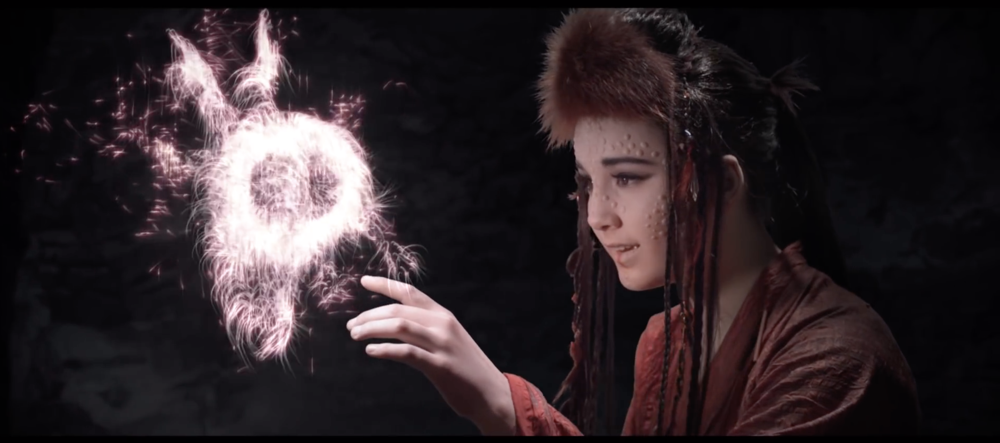

This album introduced everyone to the unique and fantastic world OMAM (Of Monsters and Men) created, drawing influence from their Icelandic origins, being notorious for their sweet folk sound and mountain-indie upbeat hymns.
My Head Is an Animal
| Little Talks: this song was the band's first major hit and what they're mostly known for. The video follows the story of a flying ship crew that encounters an other-worldly girl apparently looking for home. She joins their journey and protects them from the gigantic beasts that surround those mysterious lands. |  |
|  | King and Lionheart: the female lead singer of the band, Nanna Bryndis Hilmarsdottir, wrote this song in a way of putting into music her life experience of the moment her father and mother separated, and how his younger brother went to move far away with his father. The video is a mirroring of that, presenting to siblings being captured in war and managing to escape through this nordic-inspired, weird, and fantastic world. |